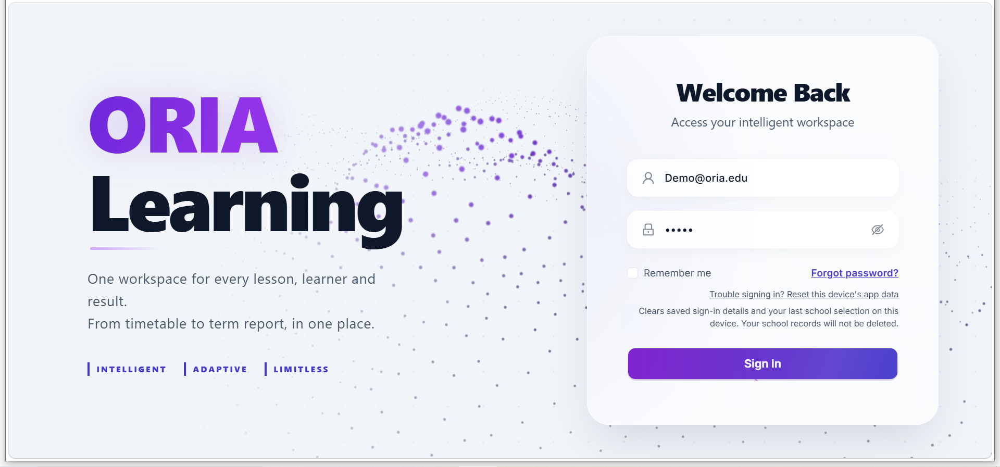

DID YOU KNOW?The world is full of
surprising facts.Generate a fact ↗

Oria Learning
A multi-tenant enterprise learning platform — role-based workspaces for staff, students and parents, covering timetables, lessons and term reports on a Django REST + PostgreSQL core with a React frontend.
ReactDjango RESTPostgreSQLRailway
DEMO ACCESS · PASSWORD = EMAIL
Visit orialearning.com Staff / Admindemostaff@oria.edu
Parentparent1@oria.edu
Studentstudentone@oria.edu